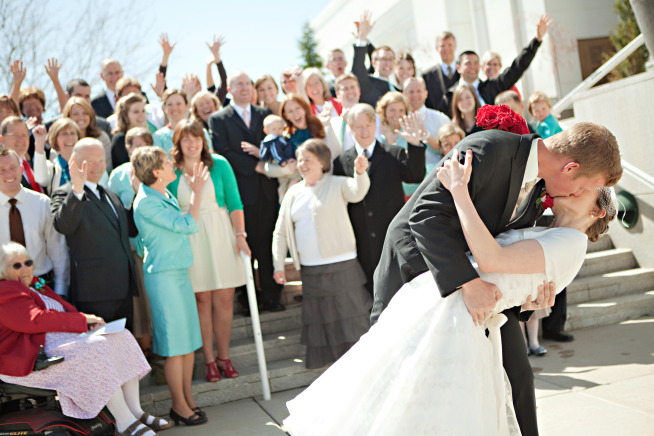

This Recently Married Man Just Realized Marriage Is Not For Him.
You Have To Read What He Wrote.
This is Seth Adam Smith and his wife, Kim. They’ve been married a year and a half, and Seth just realized: marriage is not for him.
He realized it’s MUCH more than that. This is a recent entry from his blog. It’s well worth reading.
Marriage Isn’t For You
Having been married only a year and a half, I’ve recently come to the conclusion that marriage isn’t for me.
Now before you start making assumptions, keep reading.
I met my wife in high school when we were 15 years old. We were friends for ten years until…until we decided no longer wanted to be just friends. :) I strongly recommend that best friends fall in love. Good times will be had by all.
Nevertheless, falling in love with my best friend did not prevent me from having certain fears and anxieties about getting married. The nearer Kim and I approached the decision to marry, the more I was filled with a paralyzing fear. Was I ready? Was I making the right choice? Was Kim the right person to marry? Would she make me happy?
Then, one fateful night, I shared these thoughts and concerns with my dad.
Perhaps each of us have moments in our lives when it feels like time slows down or the air becomes still and everything around us seems to draw in, marking that moment as one we will never forget.
My dad giving his response to my concerns was such a moment for me. With a knowing smile he said, “Seth, you’re being totally selfish. So I’m going to make this really simple: marriage isn’t for you. You don’t marry to make yourself happy, you marry to make someone else happy. More than that, your marriage isn’t for yourself, you’re marrying for a family. Not just for the in-laws and all of that nonsense, but for your future children. Who do you want to help you raise them? Who do you want to influence them? Marriage isn’t for you. It’s not about you. Marriage is about the person you married.”
It was in that very moment that I knew that Kim was the right person person to marry. I realized that I wanted to make her happy; to see her smile every day, to make her laugh every day. I wanted to be a part of her family, and my family wanted her to be a part of ours. And thinking back on all the times I had seen her play with my nieces, I knew that she was the one with whom I wanted to build our own family.
My father’s advice was both shocking and revelatory. It went against the grain of today’s “Walmart philosophy”, which is if it doesn’t make you happy, you can take it back and get a new one.
No, a true marriage (and true love) is never about you. It’s about the person you love—their wants, their needs, their hopes, and their dreams. Selfishness demands, “What’s in it for me?”, while Love asks, “What can I give?”
Some time ago, my wife showed me what it means to love selflessly. For many months, my heart had been hardening with a mixture of fear and resentment. Then, after the pressure had built up to where neither of us could stand it, emotions erupted. I was callous. I was selfish.
But instead of matching my selfishness, Kim did something beyond wonderful—she showed an outpouring of love. Laying aside all of the pain and aguish I had caused her, she lovingly took me in her arms and soothed my soul.
I realized that I had forgotten my dad’s advice. While Kim’s side of the marriage had been to love me, my side of the marriage had become all about me. This awful realization brought me to tears, and I promised my wife that I would try to be better.
To all who are reading this article—married, almost married, single, or even the sworn bachelor or bachelorette—I want you to know that marriage isn’t for you. No true relationship of love is for you. Love is about the person you love.
And, paradoxically, the more you truly love that person, the more love you receive. And not just from your significant other, but from their friends and their family and thousands of others you never would have met had your love remained self-centered.

Seth Adam Smith and his wife, Kim on their wedding day with friends and family.
Truly, love and marriage isn’t for you. It’s for others.